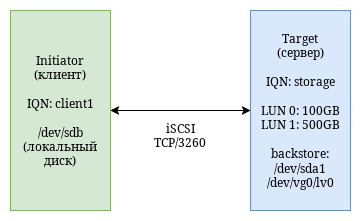

Цель лекции: Сформировать понимание принципов работы блочных сетей на примере iSCSI, объяснить отличие от файловых протоколов (NFS/SMB), архитектуру iSCSI (Target, Initiator, LUN, IQN), разобрать сценарии использования, производительность и безопасность.
На прошлых занятиях мы говорили о файловых сетевых протоколах — NFS и SMB. Они отлично подходят для организации общего доступа к файлам, где сервер управляет файловой системой, а клиент видит привычную структуру папок и файлов.
Но есть сценарии, где файловый доступ недостаточен:
Здесь на сцену выходят блочные сети. Самый распространённый протокол в этой категории — iSCSI (Internet Small Computer System Interface). Он позволяет передавать команды SCSI по TCP/IP-сети, превращая удалённое дисковое устройство в локальный диск.
SCSI (Small Computer System Interface) — это набор стандартов для подключения периферийных устройств (дисков, ленточных накопителей, сканеров), разработанный в 1980-х годах.
Ключевые понятия SCSI:
SCSI был разработан как параллельный интерфейс (SCSI-1, SCSI-2, SCSI-3) — толстые кабели, ограниченная длина (до 12-25 метров), жёсткие требования к терминированию. Но сам протокол (набор команд) оказался настолько удачным, что его адаптировали для других физических интерфейсов.
| Интерфейс | Физическая среда | Макс. длина | Скорость | Применение |
|---|---|---|---|---|
| Parallel SCSI | Медный кабель | 12-25 м | До 320 МБ/с | Устарел |
| SAS (Serial Attached SCSI) | Медный кабель | 10 м | До 24 Гбит/с (SAS-4) | Внутреннее подключение дисков в серверах |
| Fibre Channel (FC) | Оптика (или медь) | 10-100 км | До 128 Гбит/с (Gen7) | Корпоративные SAN, дисковые полки |
| iSCSI | Ethernet (TCP/IP) | Любая (IP-сеть) | До 100 Гбит/с (и выше) | Блочные сети на стандартном оборудовании |
iSCSI — это протокол, который инкапсулирует SCSI-команды в TCP/IP-пакеты. Он позволяет:
Аналогия: Если NFS и SMB — это доставка "заказных блюд" (файлов), то iSCSI — это доставка "ингредиентов" (сырых блоков), из которых клиент сам готовит своё блюдо.
1. iSCSI Target (цель)
2. iSCSI Initiator (инициатор)
open-iscsi, Windows: Microsoft
iSCSI Initiator).3. LUN (Logical Unit Number)
4. IQN (iSCSI Qualified Name)
iqn.yyyy-mm.naming-authority:unique-nameiqn.2025-03.com.example:storage.target15. Portal (портал)

В Linux стандартным iSCSI-инициатором является пакет open-iscsi.
Основные файлы и команды:
/etc/iscsi/initiatorname.iscsi — содержит IQN инициатора./etc/iscsi/iscsid.conf — настройки (CHAP, таймауты).iscsiadm — основная утилита управления.Основные операции:
Просмотр IQN
cat /etc/iscsi/initiatorname.iscsi
Обнаружение Target
iscsiadm -m discovery -t st -p 192.168.1.10
Подключение к Target
iscsiadm -m node -T iqn.2025-03.com.example:storage.target1 -p 192.168.1.10 -l
Просмотр активных сессий
iscsiadm -m session
Отключение
iscsiadm -m node -T iqn.2025-03.com.example:storage.target1 -p 192.168.1.10 -u
После успешного подключения в системе появляется новое блочное устройство (например,
/dev/sdb), с которым можно работать как с обычным диском — размечать,
создавать ФС, монтировать.
В Linux стандартным iSCSI-таргетом является LIO (Linux-IO Target), управляемый через утилиту
targetcli.
Иерархия targetcli:
/ ├── backstores/ # Хранилища (backstores) │ ├── fileio/ # Файлы как LUN │ ├── block/ # Блочные устройства как LUN │ ├── pscsi/ # Физические SCSI-устройства │ └── ramdisk/ # Оперативная память (для тестов) ├── iscsi/ # iSCSI targets │ └── iqn.2025-03.com.example:storage.target1/ │ └── tpg1/ # Target Portal Group │ ├── portals/ # IP:порт │ ├── luns/ # LUNs (ссылки на backstores) │ └── acls/ # Access Control Lists └── loopback/ # Для локального подключения (без сети)
Пример настройки:
# Запуск targetcli sudo targetcli # Создание backstore из файла /> backstores/fileio create file1 /srv/iscsi/disk1.img 10G # Создание iSCSI target /> iscsi/ create iqn.2025-03.com.example:storage.target1 # Создание портала (IP:порт) /> iscsi/iqn.2025-03.com.example:storage.target1/tpg1/portals/ create 0.0.0.0 3260 # Создание LUN, указывающего на backstore /> iscsi/iqn.2025-03.com.example:storage.target1/tpg1/luns/ create /backstores/fileio/file1 # Создание ACL (разрешить доступ конкретному инициатору) /> iscsi/iqn.2025-03.com.example:storage.target1/tpg1/acls/ create iqn.1993-08.org.debian:01:client1 # Сохранение конфигурации /> saveconfig /> exit
CHAP (Challenge-Handshake Authentication Protocol) — это протокол аутентификации, используемый iSCSI.
На Target (в targetcli):
/> iscsi/iqn.2025-03.com.example:storage.target1/tpg1/acls/iqn.1993-08.org.debian:01:client1/
set auth userid=clientuser
set auth password=secretpass
На Initiator (в /etc/iscsi/iscsid.conf):
node.session.auth.authmethod = CHAP node.session.auth.username = clientuser node.session.auth.password = secretpass
Для отказоустойчивости и увеличения пропускной способности используют Multipath I/O. Initiator подключается к одному Target через несколько сетевых путей (разные сетевые интерфейсы, разные коммутаторы).
Схема:
Initiator ── eth0 ── Switch A ── Target (порт 1)
└─── eth1 ── Switch B ── Target (порт 2)
В Linux за управление многопутевым доступом отвечает multipath-tools.
Система видит одно устройство /dev/mapper/mpathX, которое объединяет
несколько физических путей.
| Характеристика | iSCSI | Fibre Channel (FC) | NVMe-oF | NFS/SMB |
|---|---|---|---|---|
| Тип доступа | Блочный | Блочный | Блочный | Файловый |
| Физическая среда | Ethernet (TCP/IP) | Оптика (специализированная) | Ethernet/RDMA/FC | Ethernet |
| Требования к сети | Стандартная IP-сеть | Выделенная SAN-сеть | Высокоскоростная, низкая задержка | Стандартная IP-сеть |
| Задержка | Средняя (TCP оверхед) | Очень низкая | Минимальная (RDMA) | Средняя/высокая |
| Протокол | TCP/IP | FC-протокол | NVMe (через TCP/RDMA) | NFS/SMB |
| Стоимость оборудования | Низкая (стандартный Ethernet) | Высокая (FC-коммутаторы, HBA) | Средняя/высокая | Низкая |
| Использование CPU | Заметное (TCP/IP стек) | Низкое (аппаратная разгрузка) | Низкое (RDMA, offload) | Среднее |
| Применение | SMB, виртуализация, бэкапы | Крупные корпоративные SAN | Высокопроизводительные хранилища, HPC | Общий доступ к файлам |
| Сложность настройки | Средняя | Высокая | Средняя/высокая | Низкая/средняя |
Это самый популярный сценарий. Гипервизор подключается к iSCSI-таргету и видит LUN как локальный диск. На этом диске гипервизор создаёт свою файловую систему (VMFS для ESXi, LVM/QCOW2 для KVM) и размещает виртуальные машины.
Преимущества:
Серверы без локальных дисков (diskless) могут загружаться с iSCSI-диска. Для этого:
Применение: Бездисковые рабочие станции, серверы в дата-центрах, упрощение замены оборудования.
Некоторые СУБД (Oracle, MS SQL) работают эффективнее с прямым блочным доступом, особенно с использованием асинхронного ввода-вывода (AIO). iSCSI позволяет вынести дисковую подсистему на отдельное хранилище, сохранив производительность, близкую к локальным дискам.
iSCSI используется для предоставления "сырых" дисков бэкапным серверам. Это позволяет делать образные бэкапы (snapshot-based backups) и восстанавливать целые системы.
Технологии типа GFS2, OCFS2, VMFS требуют, чтобы все узлы кластера имели одновременный доступ к одним и тем же блочным устройствам. iSCSI предоставляет такую возможность, позволяя строить кластеры на стандартном Ethernet.
Факторы, влияющие на производительность iSCSI:
Рекомендации:
node.session.timeo.replacement_timeout), чтобы
система не "падала" при временных проблемах сети.Ключевые выводы:
iSCSI — это протокол блочного доступа по IP-сетям, инкапсулирующий
SCSI-команды в TCP/IP.Initiator (клиент) и Target (сервер),
идентифицируемые по IQN.open-iscsi (Initiator) и
targetcli/LIO (Target).Multipath I/O (MPIO).Вопросы для самопроверки:
На следующих двух практических занятиях мы: